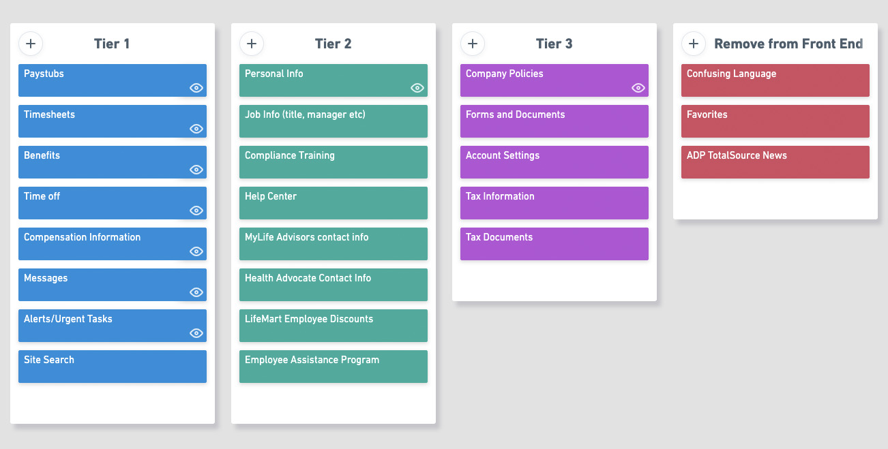
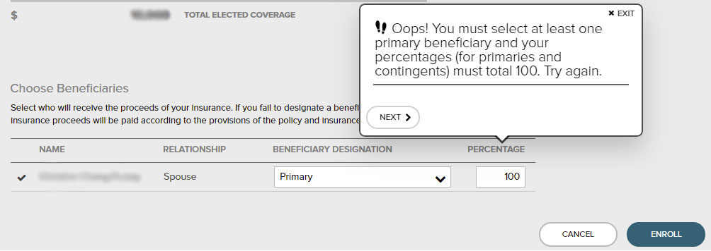
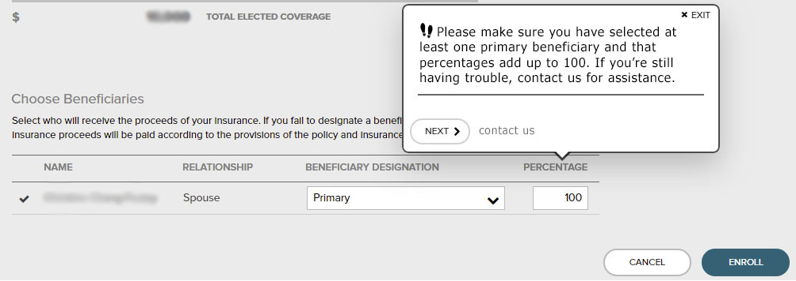
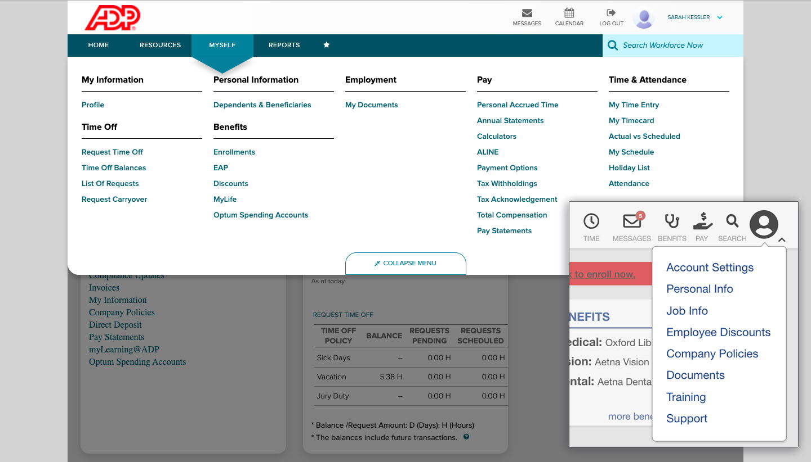
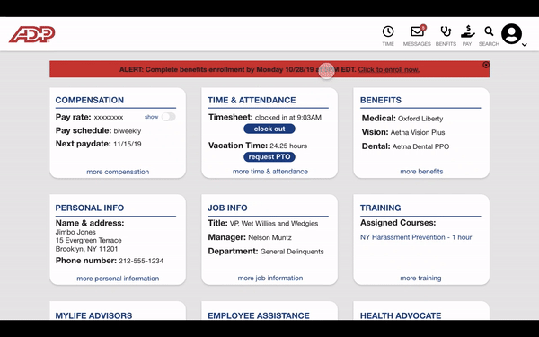

THE CHALLENGE
When my company changed our payroll and benefits administration management over to ADP Total Source I was excited. Their sales team did a great job of showing the value of partnering with ADP - the company would be saving a significant amount on fees and benefits, and employees would have more coverage with lower cost benefits, more choices of ancillary benefits, and discounts on a variety of goods and services.
So why with all of those benefits and perks were my colleagues saying things like, "I've always hated ADP?"
The desktop portal is so confusing and difficult to navigate that we were not able to enjoy all of the great things ADP has to offer. When a colleague remarked "ADP does not know how to internet," I decided to try my hand at redesigning their online experience.
THE RESEARCH
I began by interviewing a number of users and observing them as they attempted to navigate the platform. Using my colleagues as inspiration I created user personas and journey maps to identify several major pain points:
- The language feels robotic and is often difficult to understand.
- The menus have too many options making them difficult to navigate.
- Important information and tasks are buried in menus and take several steps to access.
- Superfluous information is presented up front.
- The timecards are troublesome to use. User error was extremely common as a result.
![User persona for Alice, Digital Producer. I am: 1.Very comfortable using digital tools and navigating the internet 2.Juggling a lot of tasks and responsibilities at a small digital media startup 3.Just starting out in my career
I hear: 1.The HR manager says I can do everything on the ADP website or via the mobile app 2.My coworkers are complaining because they are having trouble using the website
I see: I mostly work with other young, tech savvy people 2.A lot of people are giving up on the website and calling ADP directly to get answers
I say: If my coworkers are having this much trouble, I don't know if I'll be able to use the website 2.Can it really be that difficult? I'll give it a try
I'm frustrated because: 1.I'm already so busy with work, I don't have a lot of time to spend on managing all of this 2.I hate talking on the phone
I'll be able to: 1.Fill out my timecard so that I can get paid correctly 2.Request time off so that I can take a vacation 3.Manage my 401K so that I can plan for my future](images/studies/adppersona.jpg)
user persona
user journey map for Alice attempting to manage her 401K contributions via the ADP website
I learned that many users were abandoning the online platform in favor of asking the HR manager (me) what to do. If that failed, they called ADP for help.
I compared the platform to other PEOs (Professional Employer Organization) that I've had experience with - Zenefits, Insperity, and Justworks. These competitors were able to meet all of the same legal standards without sacrificing their UX/UI.
THE STRUCTURE
All of the pain points essentially boiled down to having too much on the site. ADP records an enormous amount of information for every employee and has a complex coding system for managing their data. Hardly any of that data or those codes are useful to individual employees, so my first task was to figure out what could go and what needed to stay.
I made a list of the features and information available on the platform. I compared my list with what was available through other platforms and then did a card sorting exercise to organize the list items based on level of importance to the user. Tier 1 items - pay information, time keeping, and benefits - would have to be among the first things a user sees upon accessing the site. Tier 2 items like personal information, compliance training, and support could be lower down or accessed via menus. Tier 3 items like company policies and account settings could be accessed entirely via menus. Everything else could be removed from the front end.
card sorting exercise created with Whimsical
THE VOICE
I developed guidelines for how the product should communicate with the user. I wanted to simplify the language and refine the tone without completely changing the brand voice.
The voice is that of a human resources expert. It is clear, concise, consistent, inclusive, and professional. Wherever inclusivity is not feasable due to legal requirements, alternatives must be provided (eg. legal name AND preferred name). The tone may change depending on context, but should be conversational and friendly without being overly familiar. It should never be aggressive, accusatory, or joking.
ADP error message
rewritten error message
This error message was displayed when I tried to update my tax withholdings before ADP had set up that feature for my account. My rewritten version of the error message advises to try again later and also provides contact information for further assistance.

ADP error message

rewritten error message
A colleague encountered this error during the benefits enrollment process. He had followed directions correctly and was still getting this message. Not only was he frustrated that the error kept popping up, but the copy was bordering on insulting. The 'Oops!' at the beginning is meant to be lighthearted, but it is tonally inconsistent with the rest of the product and implies that the user has done something wrong. My rewritten message does not blame the user, but does provide solutions.
ADP notification upon termination of an employee
This message is intended for companies who use a timeclock with a fingerprint scanner to let the administrator know when the employee's fingerprint data will be cleared from the system. Since my company wasn't using a fingerprint scanner I was confused by this message that comes up every time a termination is processed. Alerts that do not apply based on a client's account settings should not appear. Rather than try to rewrite a message like this, I would remove it.
ADP account settings
This screen is only accessible to account administrators to let them know that employees who are elligible for overtime pay must clock in/out to record their time, and that they could do it from any location with internet access. I found this message misleading, and would rephrase this as "Online clock enabled for non-exempt employees."
THE BONES

I began sketching basic wireframes in a notebook. Visualizing the site in this way allowed me to apply the organizational tiers I had developed earlier. It also gave me a chance to continue to adjust the structure for improved usability.
THE SURFACE
I decided to keep a similar color scheme and overal presentation in order to maintain consistency with other ADP products. Their brand has a very corporate feel and I wanted to preserve that.
the ADP Total Source online portal home page
my redesigned ADP portal home page
I've eliminated the empty space and reorganized the structure so that important tasks and information are up front. Anything a user is most likely to be looking for is on the homepage and above the fold. I also removed items that a user would probably not be interested in, like the links for Compliance Updates and Invoices which are only relevant to administrators.

ADP's expanded menu and my redesigned version
By reorganizing the structure of the site I was able to simplify navigation and eliminate the secondary nav bar. I brought the menu elements down from 35 to 13.
the Total Source timesheet
redesigned page for time and time off
The ADP timesheet includes codes that provide no value to the user. That information could be recorded without being displayed. In my version I removed the department, job title, position ID, and pay codes. I also provided two ways to clock in and out - either on the home page, or from the time and attendance page. ADP has separate buttons to clock in, clock out, and in some cases they have separate buttons for clocking in and out for lunch too. I brought it down to one button that will record time and automatically set the in/out status depending on the user's last recorded time.

clocking in and out on the home page and time and attendance page
THE OUTCOME
One ADP customer I spoke with told me, "My company is desperate to get off of ADP." By designing a product that eliminates friction for users, ADP would improve customer satisfaction and client retention.
I eliminated unnecessary white space and removed a lot of clutter. The portal as I designed it is simple to navigate, the process to record time is uncomplicated, and alpha numeric codes have been either replaced with plain language or removed entirely. One of ADP's slogans is "Always Designing for People." If they implemented my changes they could deliver on that promise.